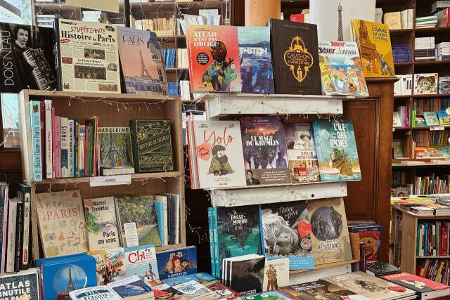
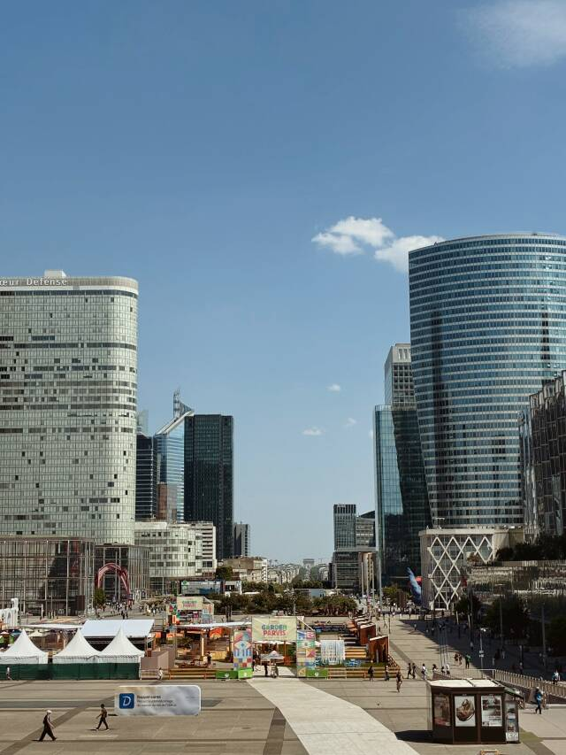
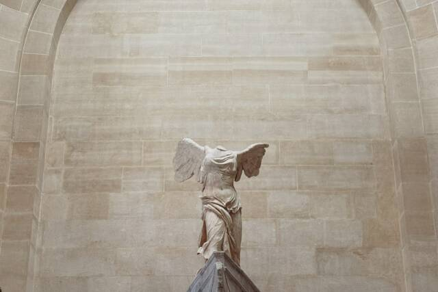
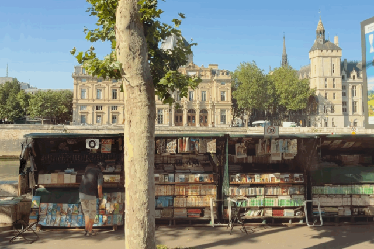
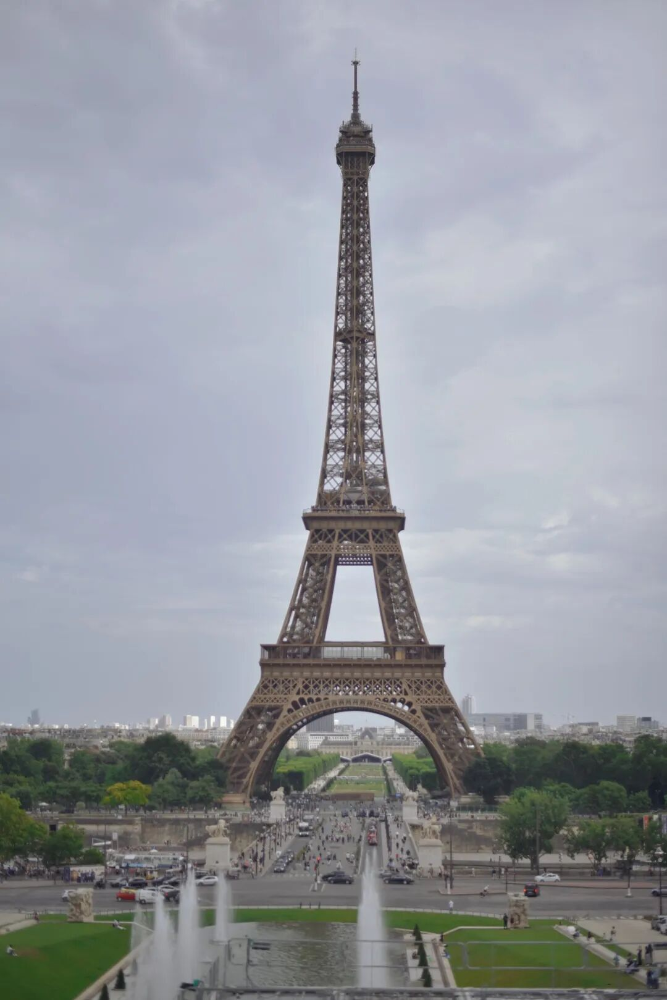
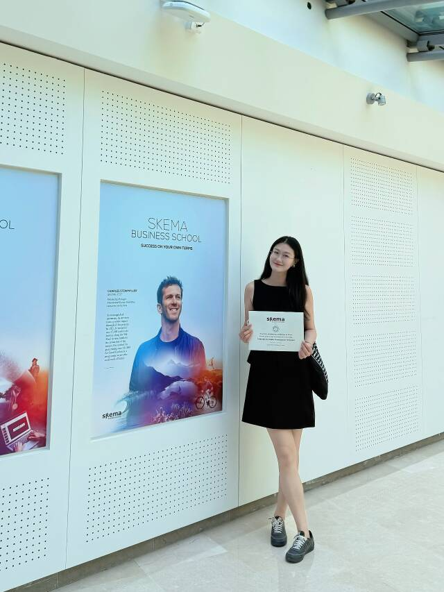

飞机降落戴高乐机场时，我想的是海明威那句话：“巴黎是一席流动的盛宴。”
在万米高空重读《流动的盛宴》，我期待的是某种确认——确认那些被电影和书籍镀上金边的咖啡馆、公园、塞纳河畔的旧书摊，确实存在于这个城市的某个角落。但这一周的日程表告诉我，我幻想中的巴黎大概在落地前就已经结束了。
SKEMA 的课程与参访排满了每一个白天。每天七点起床，晚上九点多回到酒店，我们像一支训练有素的考察队，在文化与组织、创新创业、奢侈品管理、人工智能的课程间切换，在知名地标、拉德芳斯、萨克雷大学、Fragonard 香水博物馆之间移动。
这是一次 MBA 项目的集体访学，它确实给了我短暂的留学体验，也强烈地提醒我：我们这一代人的“流动的盛宴”，可能已经不是坐在花神咖啡馆里阅读与写作，而是在紧凑的行程中，试图从每一场参访、每一次对话里提取出足够多的认知增量。
这听起来没那么浪漫，但大概更接近我真实的生活方式。
多年前读安妮·埃尔诺和迪迪埃·埃里蓬时，法国给我的印象就是参差的。阶层、教育、趣味，这些结构性的东西如何嵌入一个人的身体和命运，是 ta 们反复书写的主题。而这一周，我不断想起 ta 们。尤其是在拉德芳斯。

那是一个灼热的下午，法国迎来了历史性的夏季高温，太阳晒得人发懵。
为我们讲解的建筑师是一位年轻女性，她站在新凯旋门旁边，耐心解释一栋又一栋建筑的环保设计：外立面的材料如何减少能源消耗，公共空间怎样组织人流，无障碍电梯又如何考虑残障人士的出行。
我们一群人站在阴凉下，也觉得炙热，有人拍照，有人低头看手机。她仍然不急不缓地讲着那些建筑细节。
我站在那片现代主义的玻璃与钢铁之间，忽然想到一句话，不知道在哪里读到过：一个社会的文明程度，取决于对弱者的态度。
拉德芳斯是巴黎的商务区，是欧洲最大的中央商务区之一，但它在这个细节上呈现出的不是冷冰冰的效率至上，而是一种被制度化和设计化的“体面”。我忍不住想，我们的城市在快速生长的过程中，这样的体面是被优先考虑，还是被牺牲在工期、成本和验收表格里？
后来与当地向导和老师的攀谈，也让我继续看见巴黎的另一面。
她们说，巴黎的那些奥斯曼老建筑每十五年必须做一次外墙清洗。因为建筑材料和城市保护要求，清洗工艺很特殊，费用也很高，动辄两万欧元。作为房东，每次换租客，都要重新进行房产价值评估。房屋空置，还会被征收空置税。小巴黎寸土寸金，大部分的普通人都住在大巴黎，因此上下班高峰期总是堵车严重。
这些细节让我意识到，巴黎的优雅不是单纯的审美结果。它背后有一整套精密而昂贵的制度在支撑。它制造秩序，也制造门槛。
有同学问，法国什么职业收入最高？
回答是律师、金融、医生等，ta 们属于那百分之五，一万欧元月薪已是高薪。精英大学的学费，法国人和外国人一样，每年两万欧元。想要进入这种大学，还需要先在那几所高中学完预科。
阶层感在这里并不隐晦。它写在教育路径、职业选择和生活趣味里。向导说，法国人即使不爱明显的大牌 Logo，也仍然在意品牌质感和搭配风格。人们遵守自己所属阶级的审美秩序，这一点甚至不需要刻意强调。
就这样，巴黎在我心里摘下了面纱。它不是一个被《午夜巴黎》《爱在三部曲》柔化过的浪漫符号，而是一个有堵车、有阶层、有制度、有清洗成本和空置税的真实城市。它的美是真实的，但这种真实里包含着精致的区隔。
作为一个外来者，我用一周时间匆匆翻阅它的几个章节，当然连一次关于“欧洲现代社会”的快速田野调查也算不上。但我并不觉得失望。甚至，我觉得这比单纯在塞纳河边散步、在咖啡馆喝咖啡，更贴近我理解真实世界的方式。

回程的飞机上，我再次翻开《带一本书去巴黎》，发现自己此行只去了卢浮宫和协和广场。那些留下念想的地方——拉丁区的咖啡馆、波伏瓦之墓、杜乐丽花园——都没能去成。但我已经明白，其实它们去不去也没那么重要了。
倒不是我放弃了浪漫，而是我意识到自己此前对巴黎的浪漫想象，可能更多来自某种关于“文艺青年”的身份叙事。仿佛去了巴黎，就应该在某个咖啡馆里读书，应该在塞纳河边发呆，应该去拜访那些文学和哲学思想绽放的旧址，才能完成一趟足够“巴黎”的旅行。

而真正让我感到充实的，反而是这些课程、参访、阅读带来的认知拼图——凡尔赛宫的奢华与法国大革命的关联，萨克雷大学周围那片工地上正在生长的新校区所代表的法国高等教育发展，香水博物馆里那一整套关于嗅觉、记忆与奢侈品营销的叙事逻辑。
在香水博物馆里，讲解员让我们闻不同的香调。其中一款被称之为“伪体香”，另一款被称之为“巴黎时装周”。是啊，嗅觉和记忆的关系非常紧密，一种气味可以让人瞬间回到某个时刻，就像“巴黎时装周”，就是一款馥郁而矜贵的味道。那一刻我更加理解，奢侈品营销从来不只是卖一件东西，而是在制造一种可被回忆的经验。香水尤其如此，它几乎没有可见的形状，却能把一个人的记忆、身份、欲望和想象全部调动起来。
这和我过去理解的品牌叙事、情绪价值、消费主义，又在某个细小的地方接上了。
于是这一趟开始变得有意义。我看到有一些原本散落的知识，一次一次在真实场景里被重新点亮。
行程尾声，我忽然有一种前所未有的明晰。

这种明晰不是关于巴黎的，而是关于我自己。
上课时，我发现很多内容并没有超出自己已有的认知框架。老师讲文化维度理论，我会想到跨国组织里的沟通误差，也会想到大厂里那些看似低效却能维持秩序的流程。老师讲 AI 对商业模式的冲击，我会想到最近一年工作中接触到的 Agent、产品营销和客户教育。老师讲奢侈品品牌管理，我会想到过去读过的消费社会、品味区隔和品牌资产。
我没有那种“被打开新世界”的震撼，反而有一种平静的确认：原来过去几年通过阅读、课程、写作和工作实践慢慢搭起来的东西，真的已经在我身体里形成了一套系统。它可以解释新的经验，也可以接住新的信息。
这听起来可能有点自大，但对我而言，这是一种迟到的配得感。以前我总是带着一种学习视角去看世界。哪怕是旅行，也像是在收集素材、补充知识、完成某种认知上的补课。好像只有不断吸收、不断理解、不断证明自己还在进步，才能获得一点稳定的安全感。
但这一周让我觉得，也许可以换一种方式了。
我依然会追问，会分析，会忍不住把眼前经验放进某个分析框架里。可那个追问的动力，正在从不安转向信任。
我不需要总是以“学生”的姿态去确认自己的位置。也许我可以更自由一点，用体验的视角去生活，选择那些真正能滋养我的事物，而不必总是追问“这有什么用”。
2026年6月的巴黎没给我一场闲适的假期，但它给了我一个清晰的坐标。

在这个坐标上，我可以比较平静地对自己说：你积累的东西已经足够支撑你走进下一程了。你看过的书、走过的路、写下的那些文章、在无数个夜晚里一点点搭建起来的思考框架，并不是一些附着在生活之外的东西。
它们已经参与了我的生活，改变了我看待国家、城市和自己的方式。
流动的盛宴也许不在某个固定的城市，也不一定在某间被文学反复书写的咖啡馆或书店里。它在你带着这些理解回到自己的书桌前，依然觉得世界是宽阔的、值得继续探索的那一刻。
巴黎只是这次确认发生的地方。
那就把那些没去成的拉丁区、小公园、波伏瓦之墓，留给下一次吧。它们会在那里，而我会以另一种姿态再赴这场盛宴。